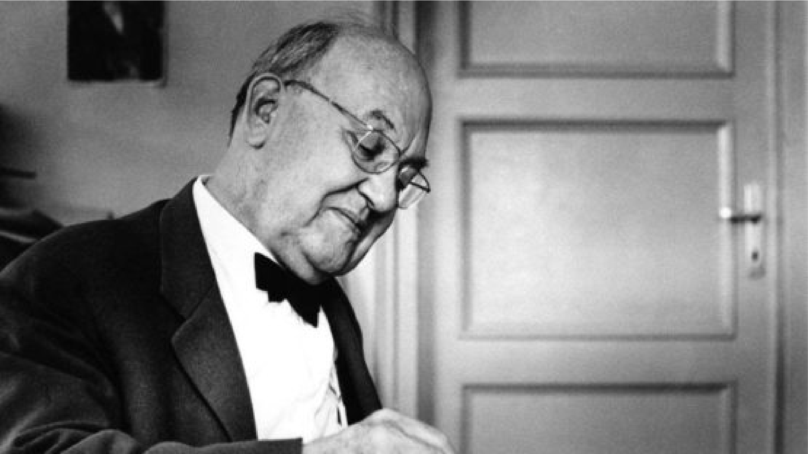
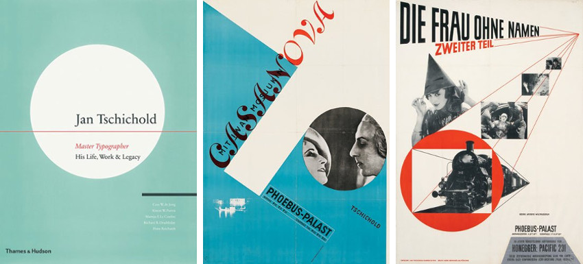

Introduction

Jan Tschichold is widely regarded as a master Typographer of the 20th Century. A trained Calligrapher and Designer, his commitment to Typography can be seen throughout his entire career. He made an incredibly significant impact on the development of Typography and Graphic Design. This essay will be investigating how Jan Tschichold changed Typography and if he should be considered an influential figure in design.
Jan Tschichold was born on the 2nd of April 1902 in Leipzig, Germany. His rich artistic background can be traced to his father who was a sign-writer, trained in Calligraphy. Although he did not receive much formal art education, the training Tschichold would receive from his father would come to set him apart from his contemporary typographers. From a young age, Tschichold was interested in Design, his first career a calligrapher for advertisements. However, it wasn’t until Tschichold would discover a Bauhaus exhibition in 1923 that he would become entirely captivated with the Bauhaus’ new developments in Design, kickstarting his interest in the new wave of Typography.
The Bauhaus was a revolutionary school of art that focused heavily on student teacher relationships and aimed to end the schism between Industrial Design and Artistry. Many Famous artists and Designers would come from the Bauhaus including Wassily Kandinsky, Paul Klee and Moholy-Nagy and the work that derived from the Bauhaus was experimental, impactful, and forward thinking. The brilliance of the aims of the Bauhaus is embodied in the slogan, ‘Art and Technology, a new unity’. For Tschichold, a young Designer, the work within the exhibition would leave him, "in a state of great agitation", as he remembered in his 1972 testament. Very quickly, Tschichold became a modernist convert filled with a new desire to abandon the regimental, traditional teaching in calligraphy he had grown up with in favor of newer ideas, abandoning serifs in typefaces and embracing simpler designs with the central focus always on clarity of message. Furthermore, Tschichold came into contact with both Moholy-Nagy and El Lissitzky further inspiring him to embrace the ideals of Russian Constructivism, even going as far as changing his first name to Iwan.
The new Typography

Possibly some of Tschichold’s most influential work would derive from his involvement with “The new Typography movement” in the 1920s and 30s. This movement would bring graphics and information design to the forefront of the artistic avant-garde in Central Europe. With their rejection of Traditional arrangement of typefaces, Designers defined the movement with striking geometrical, sans serif typefaces and asymmetrical compositions that always considered the accurate communication of information the central focus of design. In 1927, Jan Tschichold joined a group of Designers called, ‘The circle of new advertising Designers’, and It was this group that would formulate the highly influential principles of the New Typography. Tschichold joined this group in 1927, and from here his influence really began to develop. Tschichold became the spokesperson for this group, immortalizing their ideas through lectures and writing. Their principles of the new Typography are as follows:
- Asymmetric balance of elements
- Content Designed by hierarchy
- Intentional white space utilization
- Sans serif Typography
In 1928, Jan Tschichold consolidated the New Typography movement in paper when he wrote the highly influential ‘Die Neue Typographie’. This book would come to be one of the main pieces of text on modern design. In the years leading up to the publishing of this book, Tschichold made contact with many modernist Designers in Europe, including Kurt Schwitters, El Lissitzky, László Moholy-Nagy, Herbert Bayer, Piet Zwart, and Ladislav Sutnar. Because of this, this text would contain important examples of their work, some of which would become incredibly famous after the book was published. As well as this, the book became a manual for modern Designers and to this day is held in high regard. Tschichold’s work in ‘Die Neue Typographie’ would define an entire movement in Typography and would document an incredibly important shift towards what is now known as modern Design. Therefore, there is no doubt that Tschichold’s work changed the path of modern typography and therefore should be considered as a highly influential figure in Design.
Sabon and other Typefaces
"Perfect typography is more a science than an art." ~ Jan Tschichold
~(Jan Tschichold, (1991) “The form of the book: essays on the morality of good design”)
Throughout his lifetime, Tschichold stayed true to his original craft and conceptualized and developed numerous typefaces. The typefaces serve as bookmarks for certain points in his life. The earlier typefaces represent the ideologies of the Bauhaus, and include Iwan Raschiniev (1930), Transito (1931), Saskia (1931 – 1932), Zeus (1931), and Tschichold (1933 – 1936). The Bauhaus rejected the traditional arrangement of type and san serif typefaces and encouraged asymmetrical compositions and typefaces based on geometric shapes. The typefaces Tschichold created around this time reflects those ideals, for example, in the striking work of ‘Iwan Reschniev’, you can clearly see the influence of newer, modernist techniques, basing its lowercase around a simple rectangular shape and abandoning serifs. The typefaces Tschichold created at this time stand as a testament to the Bauhaus ideology.
Tschicholds most famous typeface however, was curated during his return to the more traditional, reformed arrangements of type. Sabon was modelled after the typeface Garamond and was created as a response to the need for a typeface that would have equal spacing in all versions to simplify the typesetting. Sabon was not a geometric, sans serif typeface, but instead a return to the more traditional, serif typefaces. Tschichold himself would later acknowledge,
“In the light of my present knowledge, it was a juvenile opinion to consider the sans-serif as the most suitable or even the most contemporary typeface.” ~ Jan Tschichold
~(Transcribed from Print XVIII:1 (1964) "Photo of Jan Tschichold" by Kurt Schwitter)
Tschichold would later disreguard his previous ideas as too radical, but the impact of all of his work is still incredibly influential and Sabon stands as a testament to his incredible influence to this day.
Later life in Penguin Design
In 1946, Sir Allen Lane, the founder of Penguin books, was looking to redesign and professionalize the company’s Image. Penguin books had revolutionized the industry by selling good books at a reasonable price. They were highly successful, selling 3 million copies of books at six pence each in their first year alone. At this time, Tschichold was forced to flee Europe under threat from the Nazi regime who considered Tschichold’s strong ideological and artistic stances as a threat to the cultural heritage of Germany. With no work available to him in Germany, Tschichold and his family would retreat to Switzerland and from here, he was approached by Allen Lane who recognized the need to raise the standard of his books.
It was around this point in time that Tschichold began to move away from his previously radical ideas noted in ‘Die Neue Typographie’ and began to move towards a more reformed, classical arrangement using serifed typefaces and more centred arrangements. It was this style Lane wanted to encapsulate within the redesign of Penguin. In March 1947, Tschichold took over the design of penguin books as the highest paid employee, Ahead of his arrival, Tschichold had already asked for examples of previous books to be sent out to him so he could make annotated criticisms to be amended.
Tschicholds time at the company would leave a lasting impact on the standard of printing at Penguin books. One of Tschicholds most famous changes would be the introduction of the ‘Penguin composition rules’, A four page booklet that detailed precise instructions on the typographic style that was to be upheld throughout the design of all books. Tschicholds background in typography meant he was committed to ensuring all details were correct, and The Penguin Composition Rules played a vital role in unifying the design of the Penguin series for years to come. Prior to this, printers would just aim to print books that resembled the penguin family. The new rules set In place a standard to be upheld no matter the publisher, refining Penguins design and bringing harmony and economy to its publishing program.
Conclusion
In conclusion, Jan Tschichold is most definitely amongst one of the great influences in modern design. His work with typography has undoubtably had a ripple effect on all typographers and designers that would precede him. ‘Die Neue Typographie’ codified accessible guidelines to the movement and changed the way people looked at design overnight. The impact of this publication was incredible and to this day ‘Die Neue Typographie’ is still held in high regard and widely considered as an essential contribution to any young designers collection.
What makes Tschichold even more memorable is not just his compelling fervor for the New wave of Typography, but his equally passionate turn against it and return to the more traditional, reformed aspects of design that he grew up with. His return back to a more classical style brings his journey in a full circle and shows the path of experimentation and later refinement in Tschicholds ideas as he grew and matured. He was constantly evolving and developing as a designer and was always passionate about his ideas. And it is this enthusiasm for design that would bring him success allowing him to influence and impact typography and design immensely.